1. ročník festivalu (P)o životě 2025
Pestrý program nabídl přednášky, workshopy i diskuse. Hovořilo se o umírání, smrti, zármutku, ale i o smyslu života, laskavosti a naději.
Součástí akce bylo také 10 informačních a interaktivních stánků, kde se představily organizace a iniciativy působící v oblasti konce života. Návštěvníci se mohli dozvědět více o paliativní péči, domácím doprovázení, rituálech, i praktických aspektech v rámci konce života.
Společně jsme otevřeli prostor, kde mluvit o smrti znamená mluvit o životě. Děkujeme všem, kteří přišli naslouchat, ptát se a sdílet.
Co o festivalu řekli jeho účastníci
„Bylo to fajn."
„Jste prostě skvělí! Jsem neskutečně vděčná, že jsem se mohla zúčastnit a je mi líto, že nedorazilo víc lidí… ale budu držet všechny palce a zároveň věřit, že se zúčastní příště lidí daleko více! Já vás chválím, kudy chodím!"
„Moc děkuji za úžasný festival. Na to, že to byl první ročník, tak jste měli vše skvěle zorganizované a popsané. Přijela jsem za vámi z Děčína a příští rok rozhodně přijedu zase. Děkuji za vaši skvělou práci."
„Děkuji za vaši práci, panelová diskuze a koncert – to byla pecka. Těším se na další ročník."
„Chtěla bych poděkovat a ocenit otevřenost realizátorů k danému tématu."
„Super nápad a věřím, že se bude lidem festival více dostávat pod kůži."
A jaké to bylo?
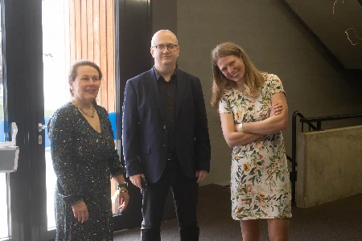
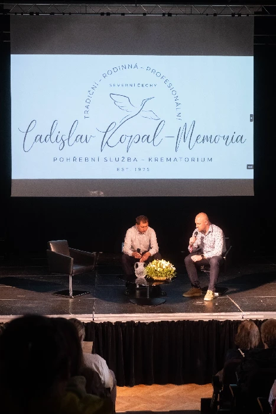
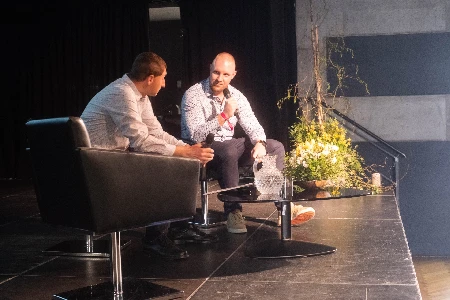
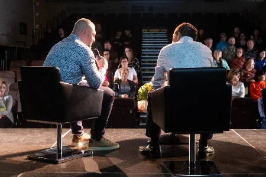
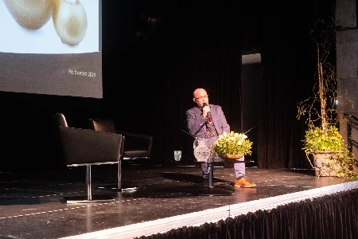
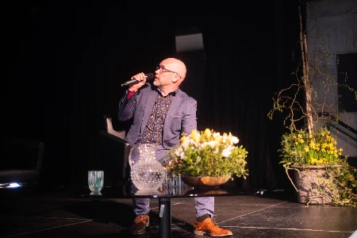
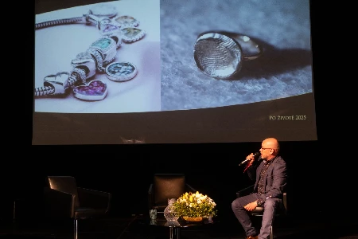
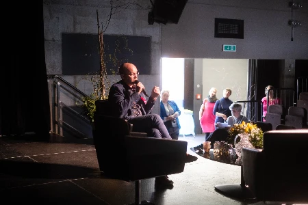
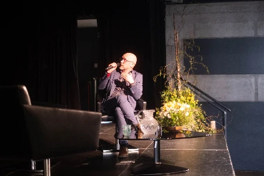
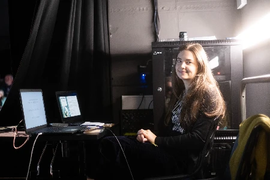
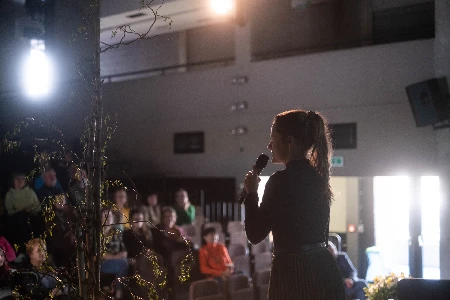
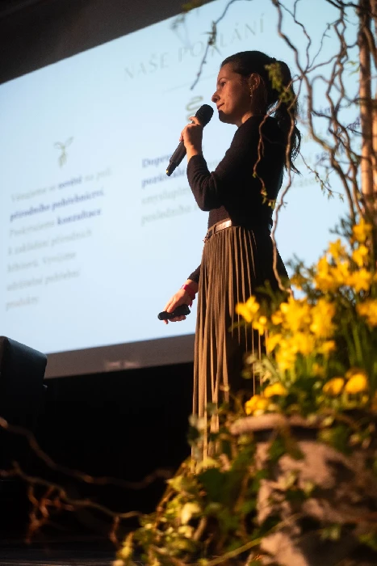
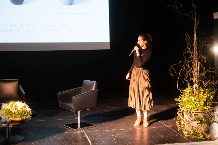
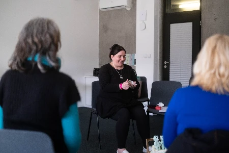
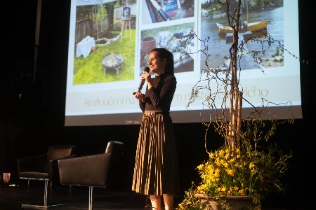
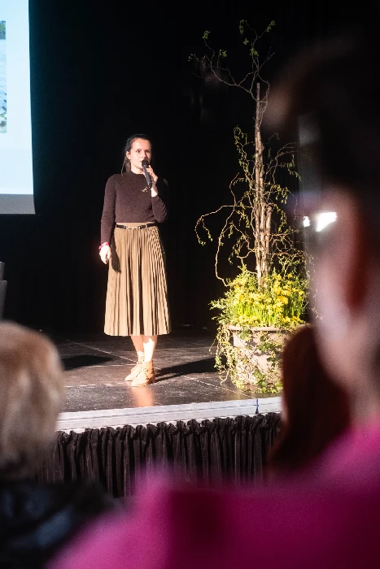
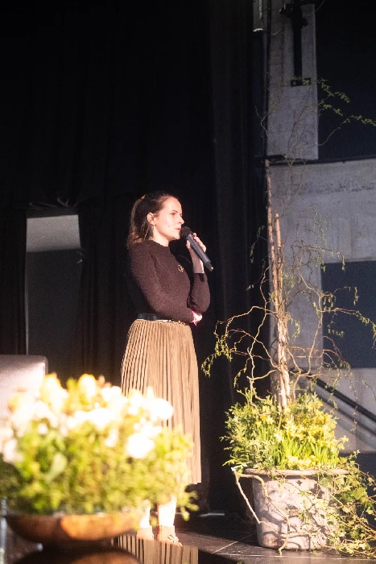
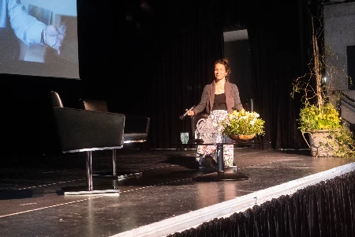
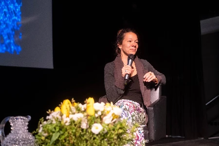
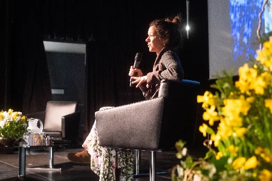
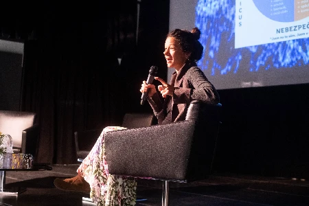
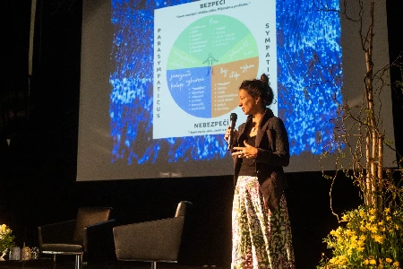
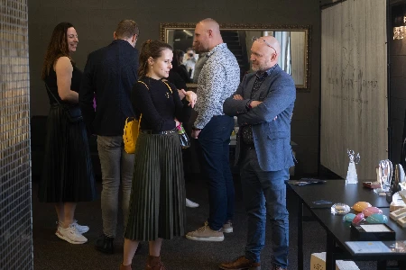
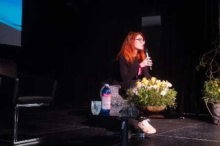
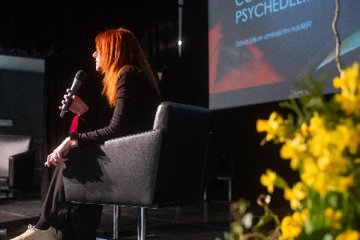
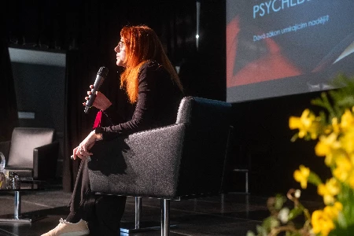
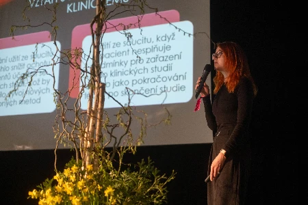
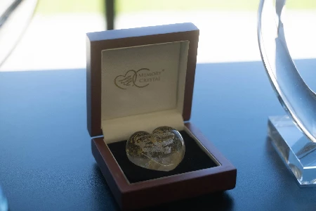
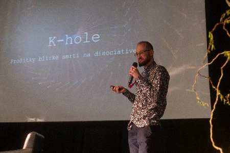
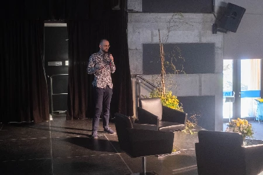
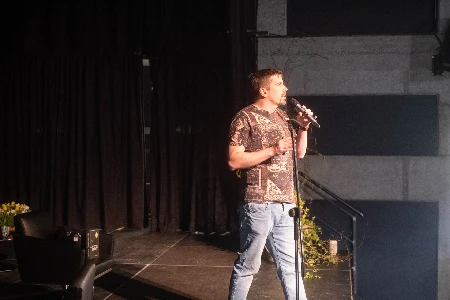
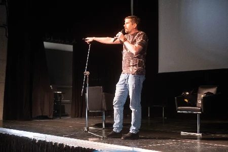
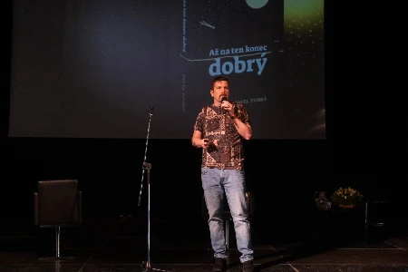
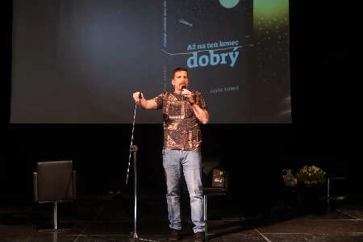
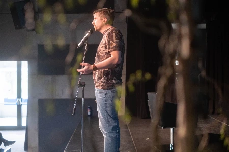
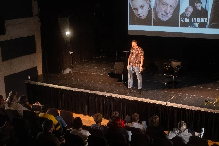